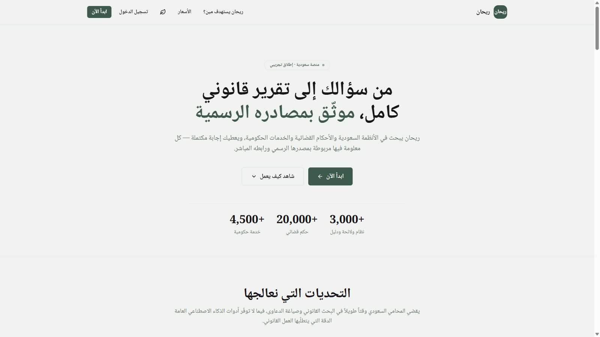
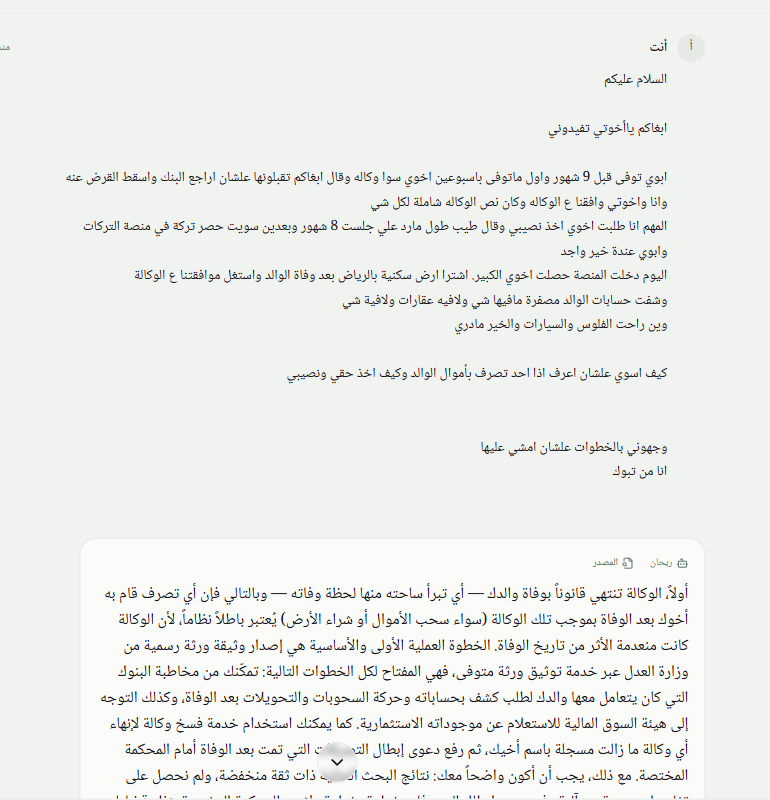
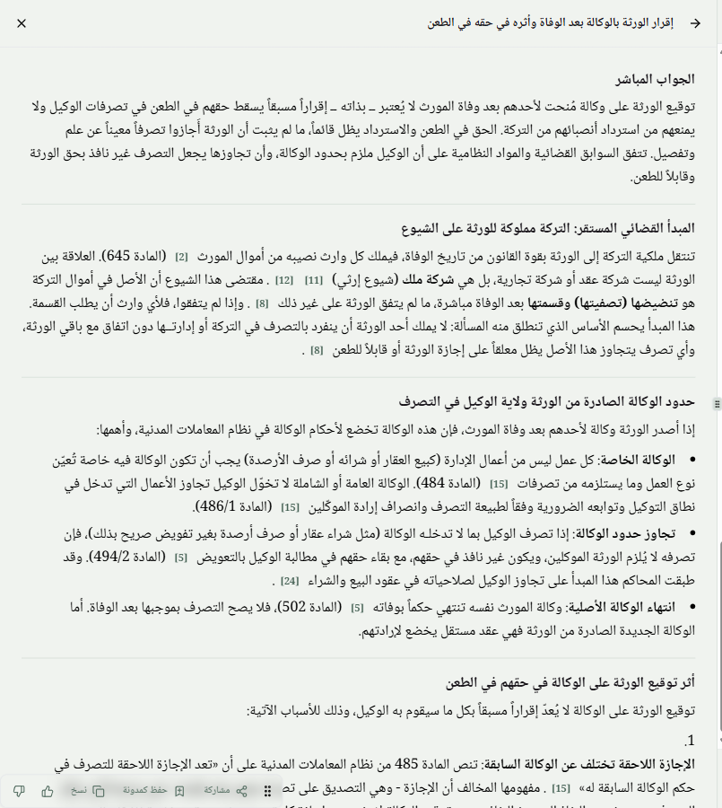
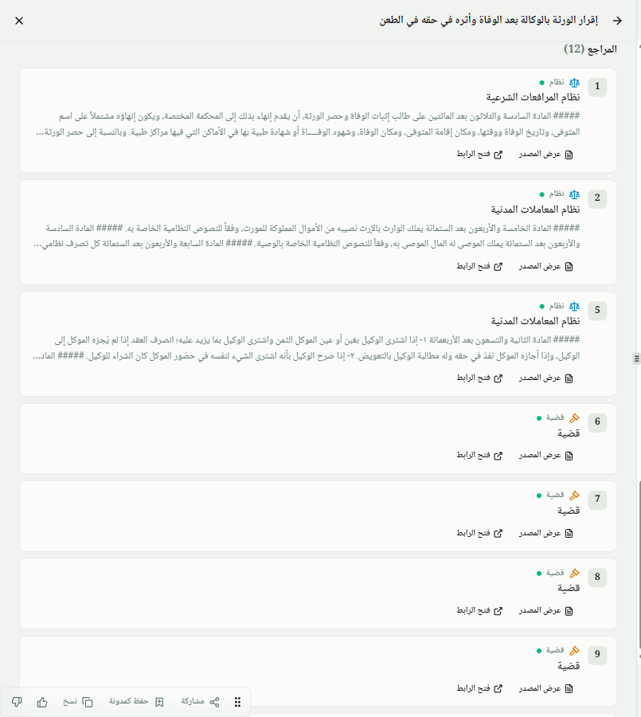
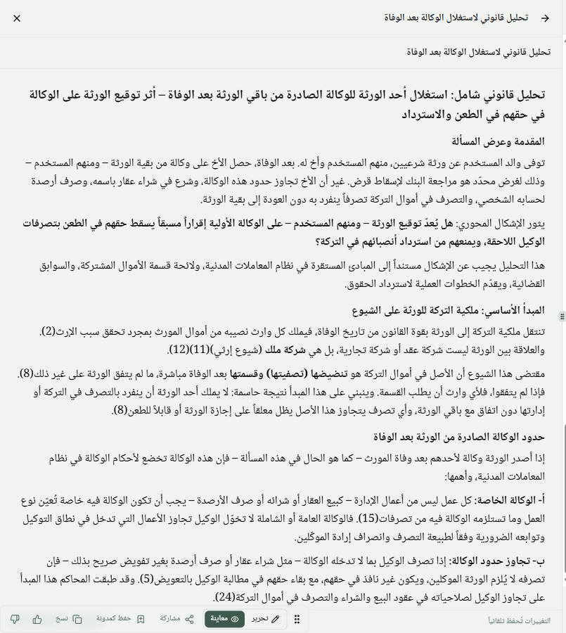
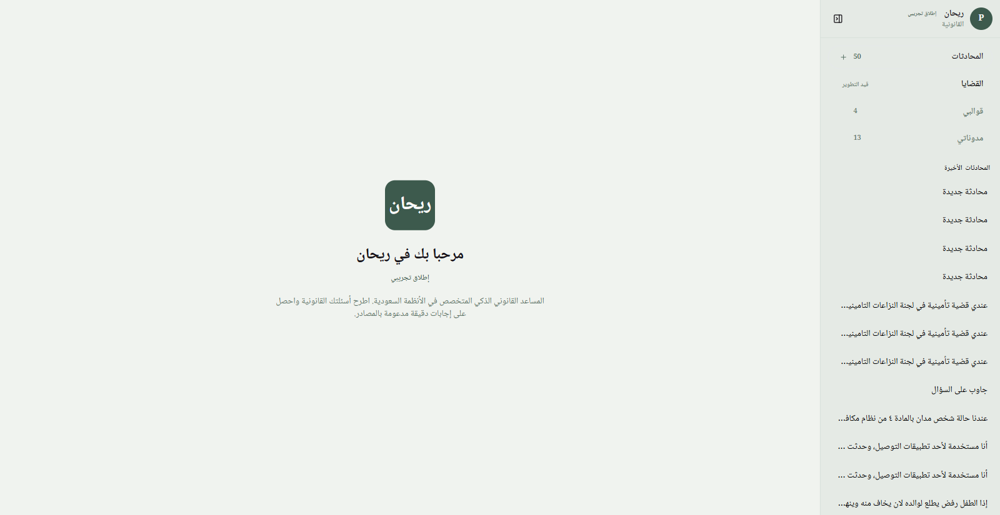

The Arabic-first AI legal associate for Saudi law — every answer grounded in official sources, every citation one click from its origin.

Lawyers spend hours daily locating the right regulation, precedent, and procedure — then drafting from scratch. It is the single largest overhead of Saudi practice.
3,000+ regulations and bylaws, 20,000+ published judgments, and 4,500+ government services are scattered across 200+ government entities and portals.
ChatGPT-class tools invent article numbers and cite regulations that don't exist. In legal work, an unverifiable answer is worse than no answer.
And it isn't only lawyers. Entrepreneurs, compliance officers, and ordinary citizens face the same wall — legal guidance in Saudi Arabia is expensive, slow, or simply out of reach.
Arabic-first by design. RTL interface, colloquial-dialect understanding, and formal legal Arabic drafting — not a translated afterthought.

The problem, as people actually write it: a father passed away; a brother obtained a power of attorney from the heirs, emptied the accounts, and bought land in his own name. "كيف اخذ حقي ونصيبي؟"
Instant legal framing. Rayhan identifies the operative doctrine, the first procedural step (صك حصر الإرث), and the path to annulment — in seconds.
Honest about confidence. The answer explicitly flags that current results are low-confidence on procedure — and offers a deeper search instead of bluffing.
Context that adapts. When the user corrects one fact ("the POA was taken after death"), Rayhan re-frames the entire legal theory — from void agency to breach of trust.

A structured report, not a chat blob: direct answer, settled judicial principle, agency limits, and the effect of the heirs' signatures — each its own section.
Article-level grounding. Claims cite specific articles — 645, 484, 486/1, 494/2, 502 of the Civil Transactions Law (نظام المعاملات المدنية) — each marker resolving to the retrieved official text.
A living workspace pane. The report opens beside the chat in a two-pane workspace and stays available to every later step — built for how lawyers actually work.

Typed sources: نظام (regulation), قضية (judgment), خدمة حكومية (government service) — each card shows the exact passage relied upon.
One click to the origin: laws.boe.gov.sa for regulations, Ministry of Justice for judgments and services. The lawyer can verify everything before relying on it.
This is the moat generic AI can't cross — a citation you can check beats an answer you have to trust.
A claim from the report — with its citation marker
تنتقل ملكية التركة إلى الورثة بقوة القانون من تاريخ الوفاة، فيملك كل وارث نصيبه من أموال المورث [2] (المادة 645)
"يملك الوارث بالإرث نصيبه من الأموال المملوكة للمورث، وفقاً للنصوص النظامية الخاصة به."
🔗 laws.moj.gov.sa — official legislation portal
نزاع بين ورثة حول المطالبة بنصيب من أرباح عقار مشترك ضمن التركة — وقضت المحكمة بعدم اختصاصها النوعي وإحالة النظر إلى المحاكم العامة.
🔗 laws.moj.gov.sa — published judicial decisions
الخدمة الإلكترونية لإصدار وثيقة الورثة الرسمية — وهي بالضبط "الخطوة العملية الأولى" التي وجّه إليها التقرير.
🔗 my.gov.sa/ar/services/40116 — national platform
Under the hood, every marker is a database row, not a string: [n] → reference record (source type · relevance · used-in-answer) → corpus row → official link. Unused retrievals never appear; every rendered card traces back to a real document.

A 1,400-word structured legal analysis — introduction, governing principle, agency limits, effect of signatures, and procedural steps — synthesized from all three research reports.
Citations survive the draft. The inline markers in the document still point to the same verified sources from the research phase.
Live document tools: edit in place, share, save as a blog page, copy — with changes auto-saved.
Question → cited analysis in one sitting. The entire journey on these four slides happened inside a single 22-minute conversation.
The lawyer attaches the judgment and states the goal: "أريد صياغة لائحة اعتراضية… لكون المنفعة حُجبت جزئياً" — an appeal against a 1.6M SAR rent ruling. OCR extracts the case file straight into the workspace.
Rayhan researches before it writes — by design: "أقترح أن أبحث أولاً في الأنظمة والأحكام ذات الصلة، ثم أصيغ اللائحة".
Deep search lands the winning principle — rent is owed only in proportion to the benefit actually received — in a 1,141-word cited research item.
The writer drafts the full appeal brief — 1,188 words, including the requested expert-appointment motion — built from the research item's verified sources.
Then refines it like an associate would: "بدّل كلمة الطاعنة اذكر موكلتي" · "شِل كل أرقام الاستشهادات" — surgical in-place edits, with the prior version snapshotted.
Why workspace items? Because long chats rot. As a conversation grows, ordinary chat AI quietly compresses and paraphrases earlier turns — details degrade. In Rayhan, every search report and every draft is a workspace item: a complete, permanent artifact with its own sources. Search produces a cited item → the writer drafts from that item's sources → edits update the same item. The evidence from message 3 is still intact at message 40 — and attached files join the workspace via OCR at 98%+ accuracy on clear documents.
Arabic, any dialect.
Documents via OCR intake.
Reversible PII swap — IDs & phone numbers never reach any LLM. PDPL-aligned.
Intent, context & workspace awareness. Picks the specialist.
Plan the research → retrieve in parallel across regulations / judgments / services → strict relevance filtering → cited synthesis.
Plans & drafts documents from verified research + user templates.
Every output is a persistent, referenced artifact — the context backbone between agents.
Grounded corpus
3,373 regulations · 33,729 chunked articles · 20,671 judgments · 4,717 services — semantic search on pgvector
Resilient serving
Multi-provider model failover · SSE streaming with reconnect · per-call cost ledger & usage metering
Full observability
Every agent step traced end-to-end · security-audited · row-level security on every table
Next.js · FastAPI · Supabase Postgres + pgvector · Redis · multi-LLM serving with automatic provider failover · SSE streaming
Agents can only cite what retrieval actually returned. Every marker resolves through a per-document source manifest to the official text — fabricated references are impossible by construction.
Every retrieved source must pass strict scope and relevance checks — tuned separately for regulations, judgments, and services — before it is allowed into an answer, and retrieval quality is continuously measured and improved.
National IDs, phone numbers, and emails are swapped for realistic decoys before any model call, and restored only in the user's view — a per-user reversible mapping, on by default.
Low-confidence results are flagged as such, coverage gaps are stated explicitly, and the assistant proposes narrower searches — built for professional reliance, not engagement.
Research that took a day now takes minutes, and arrives pre-cited for verification. Drafting starts from a grounded analysis instead of a blank page — the demo produced a court-ready analysis in one 22-minute session.
The user in our demo isn't a lawyer — an ordinary citizen from Tabuk received a correct legal roadmap for an inheritance dispute: the doctrine, the first procedural step, and the claim to file. That is access to justice.
A Saudi-built platform digitizing legal-sector knowledge work on official national sources — directly aligned with Vision 2030's digital transformation and justice-sector efficiency programs.
Responsible by default: every AI output carries a legal disclaimer, privacy masking is on by default, and answers are designed to be verified — not blindly trusted.

Everything shown in this deck is live today — the demo conversation, the citations, and the drafted document are real product output, unedited.
Case workspaces (matters with documents & memory) · payments go-live · custom drafting templates (قوالبي) · public legal-blog publishing engine.
Continuous corpus expansion toward full coverage of circulars and new judgments · retrieval quality that improves with every release.
Every lawyer, firm, and business in the Kingdom working with a legal AI that shows its sources — in their language, on their law.